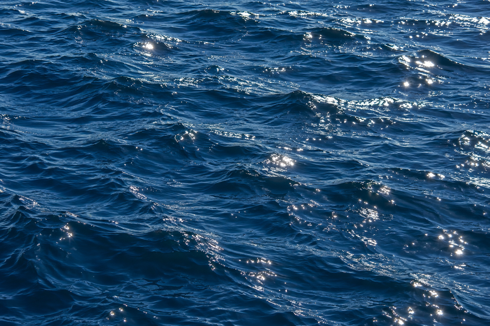
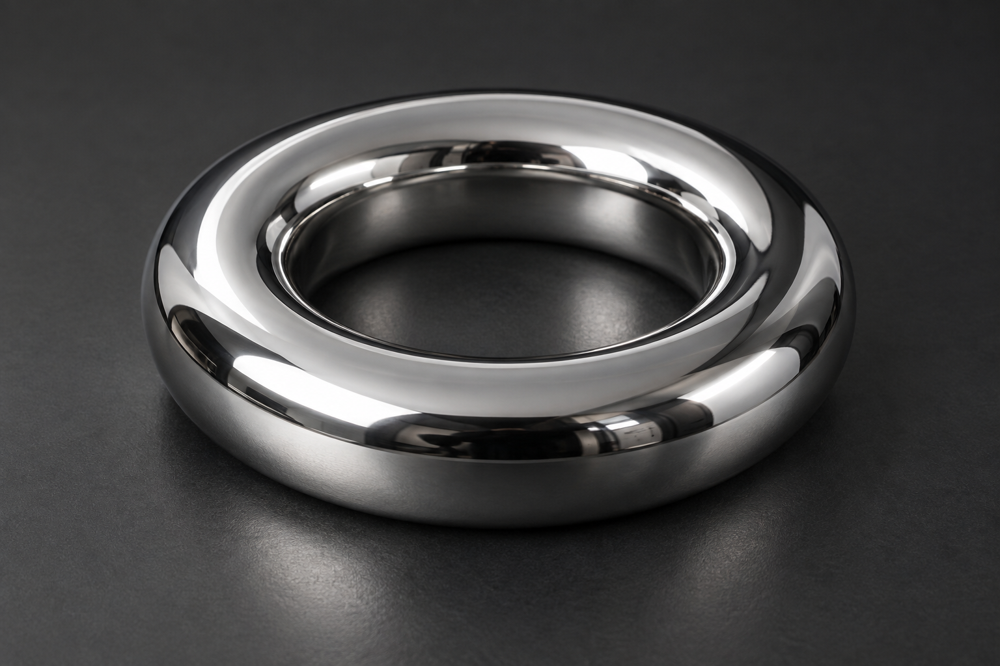
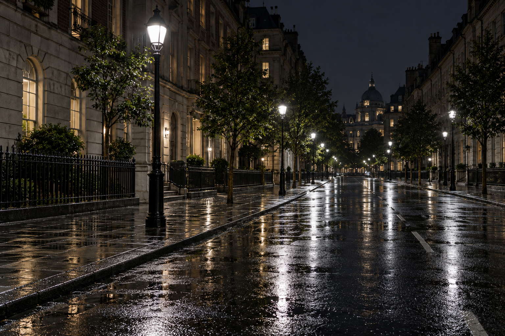
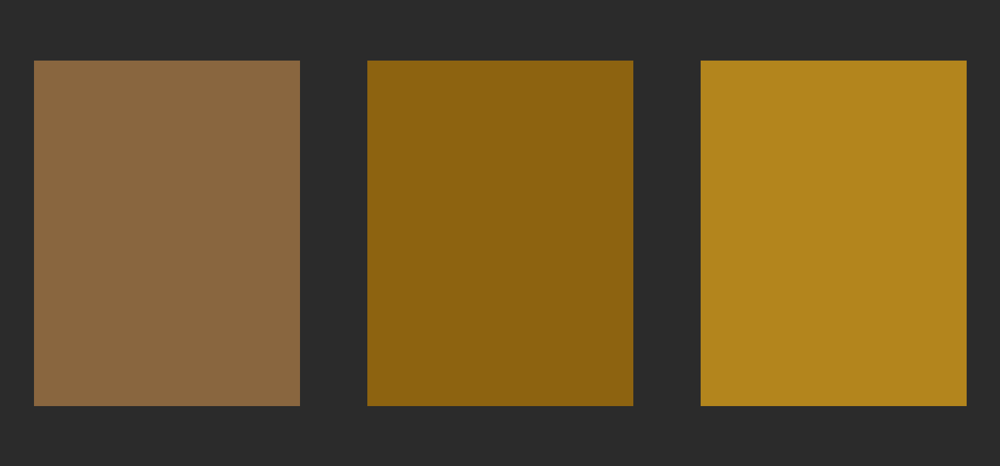
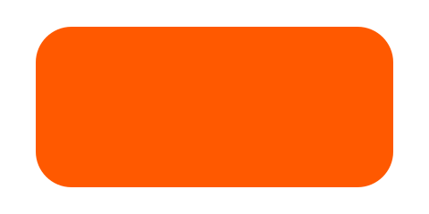

Sunlit water

Small reflections on the water receive the strongest brightness increase.
HDR highlights for the web
A JavaScript package for brighter-than-white text and image highlights. Wrap content, set its intensity, and let compatible screens reveal the extra light.
npm install brightpixelsText emphasis
Most pages make every important idea compete with the same ordinary
white. Brightpixels lets a few words rise above that ceiling. Use it
when the reader reaches the
Restraint makes the contrast work. Keep the surrounding text calm,
then reserve HDR for
Select it. Copy it. The
Image highlights
Each pair uses the same source image. Brightpixels lifts its lightest pixels on the right. The difference depends on your browser and display; both images may look the same on a standard-range screen.

Small reflections on the water receive the strongest brightness increase.

Narrow studio reflections show how the wrapper handles bright edges and metallic surfaces.

Streetlights and their reflections stand out against the darker buildings and pavement.
Color experiment
Wide gamut expands the palette. HDR adds light. Compare the same orange coordinates in sRGB and Display P3, then see the P3 color with four times the encoded light level.

This image contains real wide-gamut and HDR data. The visible difference depends on your display, browser, and available brightness; it may be reduced on standard-range screens. Download the HDR image.

<bright-image boost="all" intensity="4">
<img src="./icon.svg" alt="Orange icon" />
</bright-image><bright-text color="color(display-p3 1 0.35 0)" intensity="4">
Orange, brighter.
</bright-text>Native shapes
Rings, outlines, progress bars, dots, and lines. No extra libraries. Move the slider to fill the ring and bar; click the outlined button to toggle its brightness.
<bright-shape shape="ring" value="65" color="#ff5900" intensity="4"></bright-shape>
<bright-shape shape="outline" color="#ff5900" intensity="4">
<button>Selected action</button>
</bright-shape>
<bright-shape shape="bar" value="65" color="#26df8b" intensity="4"></bright-shape><bright-shape shape="dot" color="#26df8b" intensity="4"></bright-shape>
<bright-shape shape="line" thickness="2" intensity="4"></bright-shape>
<bright-shape shape="line" points="0,80 25,55 50,65 75,30 100,10"
style="width:12rem;height:4rem" color="#26df8b" intensity="4"></bright-shape>HTML usage
<bright-text intensity="12">
Important words
</bright-text><bright-image intensity="8">
<img src="./assets/examples/chrome.png"
alt="Reflective chrome ring" />
</bright-image>{kind=link}